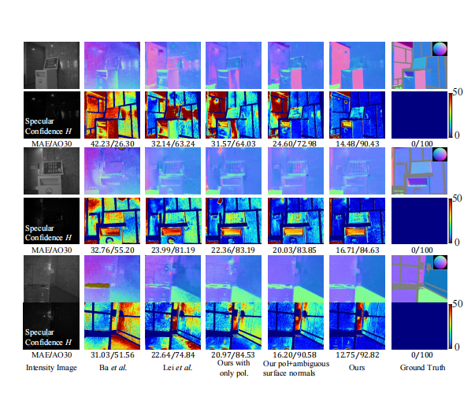

|
|
|

I am currently pursuing my Ph.D. in Intelligent Perception and Optoelectronic Information Processing Group.
I obtained my Bachelor's degree from the School of Physics at Northeast Normal University in 2023 and was subsequently admitted to the same institution for graduate studies through a merit-based recommendation.
Now, I am working toward my doctoral degree at Northeast Normal University's School of Physics under the supervision of Professor Jipeng Huang.
My research interests focus on computational imaging, and I am currently working on polarization-based 3D imaging.
Educations
- 2025.09 - present, Ph.D., School of Physics, Northeast Normal University, Changchun.
- 2023.09 - 2025.06, Master, School of Physics, Northeast Normal University, Changchun.
- 2019.09 - 2023.06, Undergraduate, School of Physics, Northeast Normal University, Changchun.
Honors and Awards
- 2024, National Scholarship for Master's Degree.
- 2023, Second Prize in the National Prize in the 18th Postgraduate Electronic Design Competition.
- 2023, Third Prize in the National Prize in the 16th China College Student Computer Design Competition.
- 2021, First Prize in the National Prize (Champion) in the NAO Golf Event of the SoftBank Robotics Cup International Youth Artificial Intelligence Competition.
- 2021, Third Prize in the National Prize in China Intelligent Robot Combat and Competition
Publications
 |
3D single pixel imaging based on parallel measurement with quadrant detector Baolin Wang#, XueJing Shi, Cheng Zhou*, Binyu Li, Xuan Liu, Xinwei Li, Jipeng Huang*, and Lijun Song* To appear in Optics and Lasers in Engineering 2025. |
||
|  |
Shape from polarization via physical prior-based deep fusion network with ambiguous surface normals Baolin Wang#, Cheng Zhou*, Yanli Meng, and Jipeng Huang* To appear in Optics Express 2025. |
||
Internships
- 2023.07 - 2023.08, Changchun Institute of Optics,Fine Mechanics and Physics,Chinese Academy of Sciences.